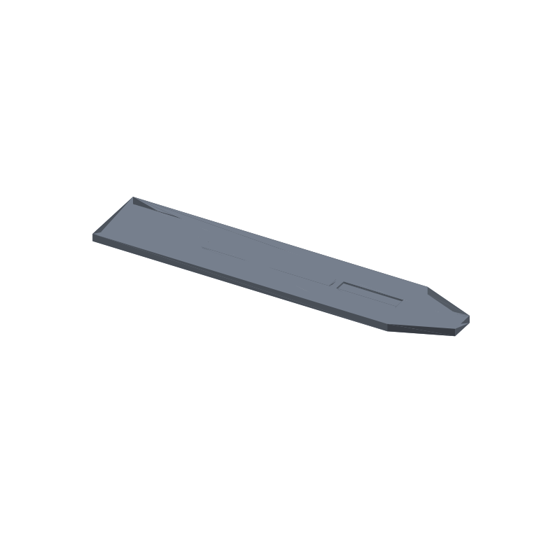

Wide plant marker stake STL, 4 blank label bars, 140 × 28 × 3 mm
Seedling rows get mixed up fast: a tray of sprouts all look alike by week two, and stick-on tags rot or wash out. This stake is a flat 140 × 28 × 3 mm bar, the wide sibling of our 3-bar plant marker stake, that pushes into the bed by hand. Its front face carries 4 recessed trays, each 24 × 5 mm and 0.8 mm deep, and each one is blank: you write on it with a paint pen or rest the seed packet in the tray while you copy the row, and the ink rides in the recess, off the soil. A centimeter of blank face between trays leaves room for a quick row sketch.
No text is engraved anywhere, so one print labels every plant you grow. The ground end tapers over the last 22 mm to a 10 mm wide chisel land instead of a stabbing point: bevels run straight from x 118 down to the flat land at x 140, so the stake goes in by hand pressure and pulls back out for relabeling without putting a spike in your beds. It prints flat: the trays are 0.8 mm recesses in the top face, so the first layer is solid plastic with no bridging and no supports.
This page carries the measured spec sheet: dimensions taken from the exported mesh, every edge counted, all 4 tray floors ray scanned, the width of the taper checked against the design at four stations, and the volume cross checked against an analytic sum, so you can check the numbers before you slice.

The STL is one material and prints in one color; the renders shade the faces by light angle so the trays, the chisel taper and the 3 mm thickness read as geometry, not paint.
Spec sheet, measured from the mesh
| Spec | Value |
|---|---|
| As exported | One connected flat stake 140 × 28 × 3 mm with 4 recessed label bars on the front face and the ground end tapering to a 10 mm chisel land |
| Label bars | 4 rectangular pockets 24 × 5 mm, 0.8 mm deep (floor plane z 2.2), at x 10 / 37 / 64 / 91 on a 27 mm pitch, centers y 14; blank trays, no engraving anywhere |
| Measured floors | 4 of 4 bar centers first hit z 2.2 from above, open space above the floor, solid plastic below; measured depth 0.8 mm == design |
| Floor spans | Ray scan on a 0.25 mm grid reads 23.5 × 4.5 against design 24 × 5, within 2 scan steps; centers 22 / 49 / 76 / 103 at y 14 exact |
| Tip | Width from section paths: 26.77 mm at x 119.5 (design 26.77), 27.59 mm at x 118.5 (design 27.59), 28.0 mm at x 117.5 and x 60; tip land ends at x 140.0 exact, a ray at x 139.95 lands on the land |
| Clearances | 3.0 mm gap between neighboring bars, the last bar ends at x 115: 3.0 mm clear of the taper start at x 118 and 11.8 mm clear of the bevel, every bar at least 2 mm from the outline edge, exact 2D distances asserted in the generator before cutting |
| Through check | A ray down each bar center from above lands on the pocket floor and a ray up from below lands on the bottom face at z 0 then z 2.2, zero mesh exits: the bars are recesses, not through-holes |
| Solid probes | 13 of 13 land inside the solid: 4 corners, tip land, 3 between-bar, 1 tail strip behind the last bar, 2 side strips, 2 taper shoulders (ray verified) |
| Volume | 10.78 cm³ mesh vs 10,782 mm³ analytic, delta 0.000000%, ≈ 13.4 g PLA solid, less at typical infill |
| Flat in the modeled orientation, pockets are 0.8 mm recesses open to the top face, first layer solid, no supports, no bridges | |
| Mesh check | Watertight, winding consistent, euler 2, genus 0 (no through-holes), one body, 84 faces, 44 vertices, all 126 edges shared by exactly 2 faces (trimesh 5.1.0, 2026-09-10) |
| Files | STL (4.3 KB) and 3MF (1.9 KB) plus the parametric generator script gen_plantmarker35.py |
| Params | stake_l 140, stake_w 28, thick 3 (band 2 to 6), corner_r 2 (mitre join, see honest limits), tip_l 22, tip_half 5, bar_l 24, bar_w 5, bar_depth 0.8 (band 0.4 to 1.2), bar_x0 10, bar_pitch 27, n_bars 4; the bar positions derive from the params and the generator rechecks them before cutting |
| License | CC-BY 4.0 on MakerWorld; royalty free, no AI training, direct from us |
How the marker was verified
The generator builds the outline in 2D: the rectangular body gets its corner treatment from a buffer pair with a mitre join, then the chisel taper trapezoid is unioned on with exact shapely geometry, and the profile is extruded once. The four tray cutters sink 0.8 mm below the top face with their caps a full millimeter above it (z 2.2 to 4.0), so nothing is coplanar with the solid. There are no 3D unions anywhere: the part is one extrusion minus four cuts, which removes the coplanar-union failure mode entirely. After every cut the script asserts watertight and winding consistent, and before it writes anything it asserts an euler number of exactly 2, one body, and a mesh-to-analytic volume delta under 1%. A section at mid-thickness, z 1.5, shows 1 loop; a section at z 2.3, inside the tray depth, shows 5 loops: the outline plus the 4 bars.
The shipped STL loads back with merged vertices as watertight, winding consistent, euler 2, genus 0, one body, is_volume true. The edge census counts 126 edges and every one of them is shared by exactly 2 faces: zero non-manifold edges anywhere in the mesh.
The trays were ray scanned on the reloaded mesh in 0.25 mm steps. A ray straight down at each bar center first hits the floor plane at z 2.2 on all 4 bars, with the void above and solid below, and the measured depth comes out at 0.8 mm. The floor spans read 23.5 × 4.5 against design 24 × 5: the span is first-open to last-open on the scan grid, so it can land up to 2 steps, 0.5 mm, under the design size, and the centers measure exact. Section paths taken across the taper read the width at four stations, 26.77 mm at x 119.5, 27.59 mm at x 118.5 and 28.0 mm at x 117.5 and x 60, all equal to the design taper to a hundredth of a millimeter, and the tip land ends at x 140.0 with a ray at x 139.95 landing on the land. Thirteen solid probes, the four corners, the tip land, the strips between and beside the bars, the tail strip and the two taper shoulders, all land inside the solid.
The volume cross checks two ways. Trimesh measures 10.78 cm³ on the mesh. An independent sum from the layout, the 118 × 28 mm body plus the chisel trapezoid (28 + 10)/2 × 22, comes to 3,722 mm²; times the 3 mm thickness that is 11,166 mm³, minus the four tray prisms at 24 × 5 × 0.8 = 96 mm³ each, comes to 10,782 mm³ = 10.78 cm³. The two agree to 0.000000%, far inside the 1% gate. The parametric claim was run three times as a check: a regeneration at bar depth 1.2 passed the same asserts at 10.59 cm³, a regeneration at tip length 30 passed clean at 10.37 cm³, and a regeneration at 3 bars passed at 10.52 cm³.
Print notes
Print the file as exported, flat in the modeled orientation: the base is a solid 140 × 28 mm face on the plate and all four trays are shallow recesses open to the top face, so every layer prints closed loops wall to wall. Nothing bridges, nothing floats, no supports, no brim beyond plate adhesion. 0.2 mm layers and two perimeters are a reasonable default; the 3 mm gaps between bars leave plenty of room for the perimeter count.
I have not test-printed this yet. If you print it, tell me how the trays take paint. The knobs are in the generator: stake_l, stake_w, thick, corner_r, tip_l, tip_half, bar_l, bar_w, bar_depth, bar_x0, bar_pitch and n_bars.
Change any of those and rerun gen_plantmarker35.py: the bar positions and clearances recompute from the layout and the script refuses to write an STL if any bar comes closer than 2 mm to the outline or a neighbor, if the thickness leaves its 2 to 6 band or the tray depth leaves 0.4 to 1.2, or if the reload fails the one body, watertight, euler 2 checks. If your rows run tight, drop n_bars to 3 and regenerate; if a tray feels too shallow to hold paint, raise bar_depth to 1.2. One number change, not a redesign. Those regenerations, plus a tip length of 30, were run as checks and passed the same euler 2 asserts.
Honest limits
The stake is mesh verified but untested on a printer, and the soil claim is geometry: the ground end tapers to a 10 mm chisel land over 22 mm, which is a shape, not a field test. How it handles your beds, your clay, your watering schedule, none of that is measured here.
The measured floor spans read up to 2 scan steps (0.5 mm) under the design sizes because the ray scan moves in 0.25 mm steps; the tray centers measure exact. The quantization is a measurement artifact, not a defect in the mesh.
The body outline keeps square corners: corner_r is a generator knob left at 2, but with the mitre join the offset pair neutralizes itself and the outline stays square, and the renders show it as it is. The chisel bevels are straight edges by design.
PLA is fine for a season on the bench and in covered beds. If the markers live out in weather, print the same generator output in PETG or ASA; no UV or freeze ratings are claimed here.
Where to get the files
The wide plant marker stake is staged on our MakerWorld account and goes public on our profile once it is submitted and clears review. The narrower 3-bar sibling is speced on its own page: plant marker stake, 3 blank label bars.
More printed organizers and bench tools, with a status table for the pool: 3D printed desk organizers and printable tools. The rebuild-everything approach, generator parameters per model side by side: parametric 3D printed tools.
Solid mesh volumes across the pool, model by model: the STL volume ledger.
FAQ
How do I label the bars?
The bars are blank 24 × 5 mm trays, so any fine paint pen or permanent marker works: write the crop name in the tray and the 0.8 mm recess keeps the ink off the soil and out of abrasion. You can also stand the seed packet in a tray while you copy the row. Because nothing is engraved, one print labels every plant in the bed; a solvent wipe or a light sand clears a tray for reuse.
Why a chisel tip instead of a point?
The ground end narrows over 22 mm to a 10 mm wide land: enough edge to push into prepared beds by hand, without a spike that stabs gloves, irrigation lines or fingers digging around the tray. If you want a sharper point, the tip_half knob drops the land width and the generator rechecks every clearance before writing an STL.
Does it print without supports?
Yes. Printed flat in the modeled orientation, all four trays are 0.8 mm recesses open to the top face: the first layer is solid plastic and every layer prints as a closed ring or rings, with no bridge anywhere. The euler count of 2 means genus 0, no through-holes, so the topology itself says the stake is solid except for the shallow tray floors.
Can I resize it or move the bars?
All of it is parametric in gen_plantmarker35.py: stake length, width, thickness, tip length and half-width, and the full bar table of count, length, width, depth, start and pitch. The generator refuses to write an STL if a bar would sit closer than 2 mm to the outline or a neighbor, or if a value leaves its assert band, and it rechecks watertight, one body and euler 2 on every run. The three regenerations tried so far, tray depth 1.2, tip length 30 and 3 bars, all passed clean.